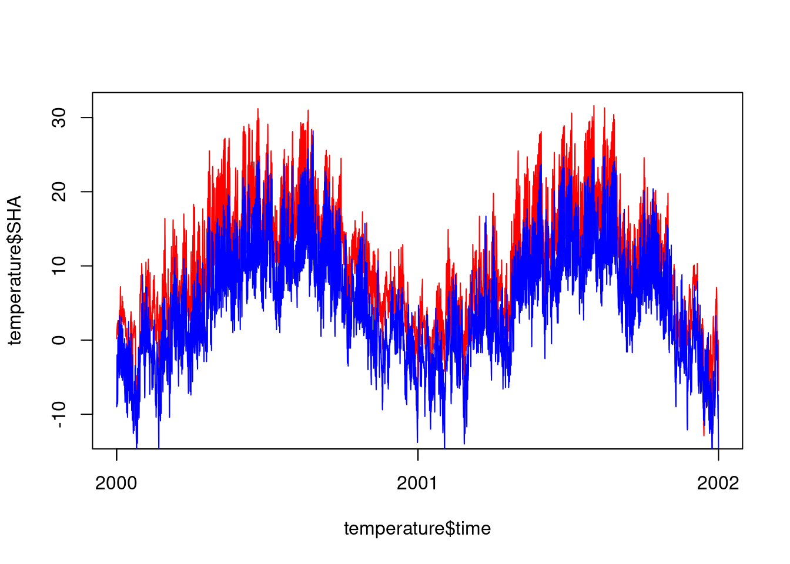
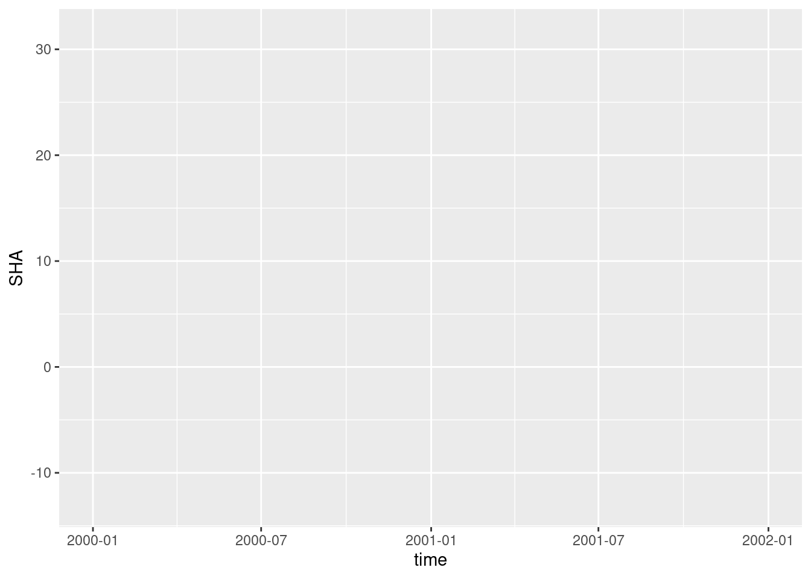
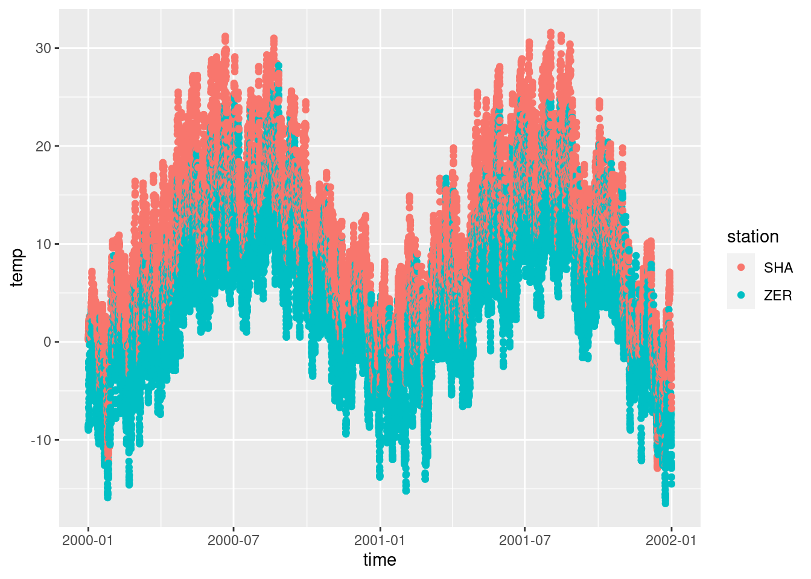
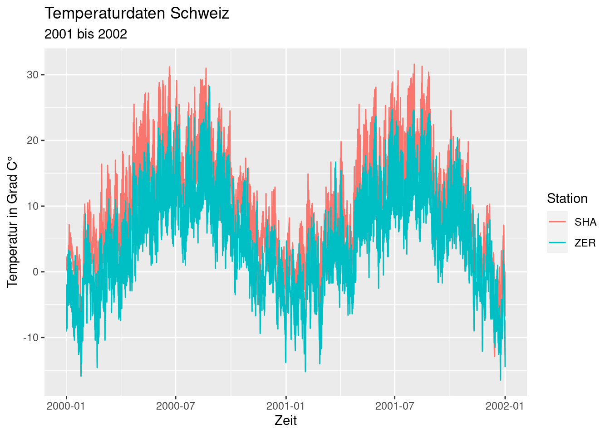
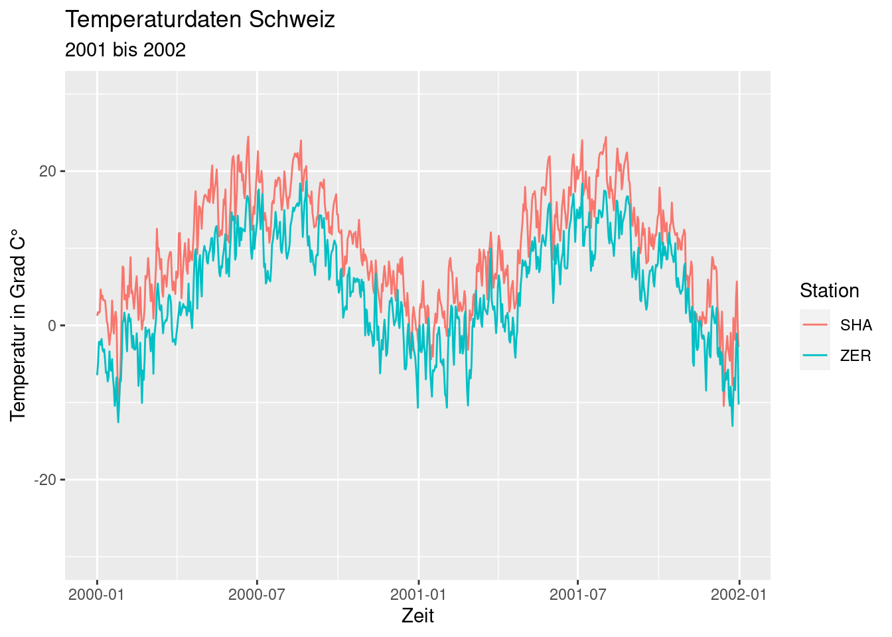
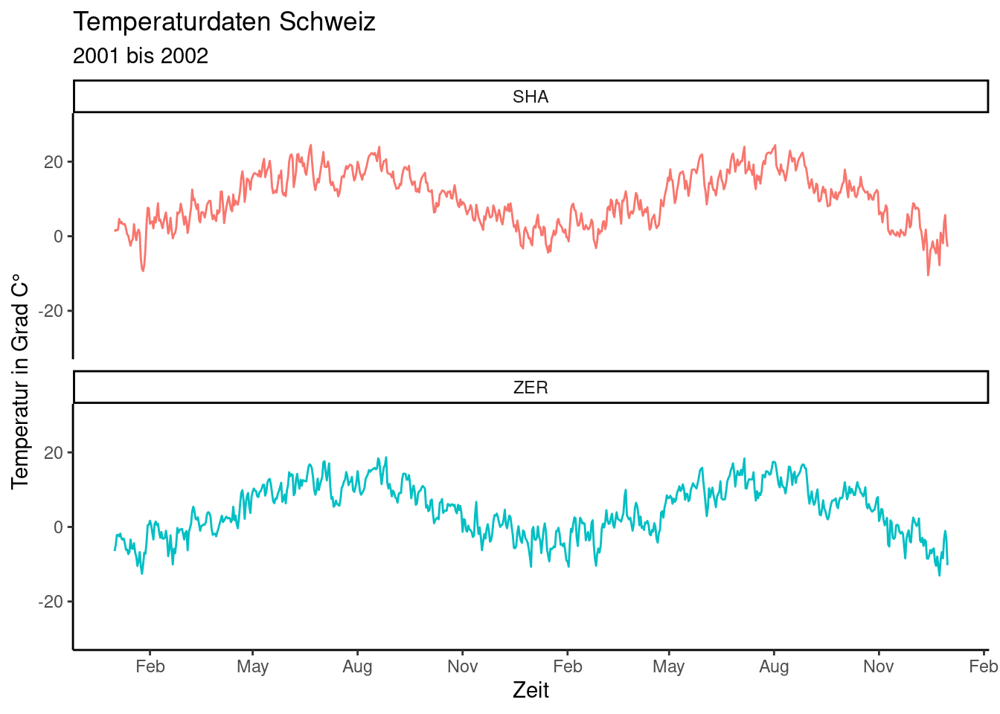
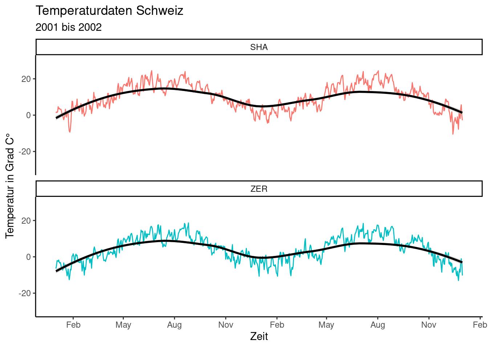

library(readr)
library(lubridate)
library(dplyr)
library(ggplot2)
library(tidyr)Infovis 1: Demo A
Als erstes laden wir den Temperaturdatensatz temperature_SHA_ZER.csv ein. Es handelt sich dabei um eine leicht modifizierte Variante der Daten aus PrePro1 und PrePro2.
# Wir können den Datensatz direkt über die URL einladen oder aber ihr nutzt die
# URL um den Datensatz lokal bei euch abzuspeichern und wie gewohnt einzulesen
temperature <- read_csv("datasets/infovis/temperature_SHA_ZER.csv")| time | SHA | ZER |
|---|---|---|
| 2000-01-01 00:00:00 | 0.2 | -8.8 |
| 2000-01-01 01:00:00 | 0.3 | -8.7 |
| 2000-01-01 02:00:00 | 0.3 | -9.0 |
| 2000-01-01 03:00:00 | 0.3 | -8.7 |
| 2000-01-01 04:00:00 | 0.4 | -8.5 |
| 2000-01-01 05:00:00 | 0.5 | -8.4 |
Base-plot vs. ggplot
Um in “base-R” einen Scatterplot zu erstellen wo Datum der Temperatur gegenübersteht, gehen wir wie folgt vor:
plot(temperature$time, temperature$SHA, type = "l", col = "red")
lines(temperature$time, temperature$ZER, col = "blue")
In ggplot sieht das etwas anders und auf den ersten Blick etwas komplizierter aus: Ein plot wird durch den Befehl ggplot() initiiert. Hier wird einerseits der Datensatz festgelegt, auf dem der Plot beruht (data =), sowie die Variablen innerhalb des Datensatzes, die Einfluss auf den Plot ausüben (mapping = aes()).
# Datensatz: "temperature" | Beeinflussende Variabeln: "time" und "temp"
ggplot(data = temperature, mapping = aes(time,SHA)) 
Weiter braucht es mindestens ein “Layer” der beschreibt, wie die Daten dargestellt werden sollen (z.B. geom_point()). Anders als bei “Piping” (|>) wird ein Layer mit + hinzugefügt.
ggplot(data = temperature, mapping = aes(time,SHA)) +
# Layer: "geom_point" entspricht Punkten in einem Scatterplot
geom_point() 
Da ggplot die Eingaben in der Reihenfolge data = und dann mapping =erwartet, können wir diese Spezifizierungen auch weglassen.
#| eval: false
ggplot(temperature, aes(time,SHA)) +
geom_point()Long vs. wide
Wie wir in PrePro 2 bereits erwähnt haben, ist ggplot2 auf long tables ausgelegt. Wir überführen deshalb an dieser Stelle die breite in eine lange Tabelle:
temperature_long <- pivot_longer(temperature, -time, names_to = "station", values_to = "temp")Nun wollen wir die unterschiedlichen Stationen unterschiedlich einfärben. Da wir Variablen definieren wollen, welche Einfluss auf die Grafik haben sollen, gehört diese Information in aes().
ggplot(temperature_long, aes(time,temp, colour = station)) +
geom_point()
Wir können noch einen Layer mit Linien hinzufügen:
ggplot(temperature_long, aes(time,temp, colour = station)) +
geom_point()+
geom_line()Beschriftungen (labels)
Weiter können wir die Achsen beschriften und einen Titel hinzufügen. Zudem lasse ich die Punkte (geom_point()) nun weg, da mir diese nicht gefallen.
ggplot(temperature_long, aes(time,temp, colour = station)) +
geom_line() +
labs(
x = "Zeit",
y = "Temperatur in Grad C°",
title = "Temperaturdaten Schweiz",
subtitle = "2001 bis 2002",
color = "Station"
)
Split Apply Combine
Im obigen Plot fällt auf, dass stündliche Werte eine zu hohe Auflösung ist, wenn wir daten über 2 Jahre visualisieren. Mit Split Apply Combine (PrePro 3) können wir die Auflösung unserer Daten verändern:
temperature_day <- temperature_long |>
mutate(time = as.Date(time))
temperature_day# A tibble: 35,088 × 3
time station temp
<date> <chr> <dbl>
1 2000-01-01 SHA 0.2
2 2000-01-01 ZER -8.8
3 2000-01-01 SHA 0.3
4 2000-01-01 ZER -8.7
5 2000-01-01 SHA 0.3
6 2000-01-01 ZER -9
7 2000-01-01 SHA 0.3
8 2000-01-01 ZER -8.7
9 2000-01-01 SHA 0.4
10 2000-01-01 ZER -8.5
# … with 35,078 more rowstemperature_day <- temperature_day |>
group_by(station, time) |>
summarise(temp = mean(temp))
temperature_day # A tibble: 1,462 × 3
# Groups: station [2]
station time temp
<chr> <date> <dbl>
1 SHA 2000-01-01 1.25
2 SHA 2000-01-02 1.73
3 SHA 2000-01-03 1.59
4 SHA 2000-01-04 1.78
5 SHA 2000-01-05 4.66
6 SHA 2000-01-06 3.49
7 SHA 2000-01-07 3.87
8 SHA 2000-01-08 3.28
9 SHA 2000-01-09 3.24
10 SHA 2000-01-10 3.24
# … with 1,452 more rowsX/Y-Achse anpassen
Man kann auch Einfluss auf die x-/y-Achsen nehmen. Dabei muss man zuerst festlegen, was für ein Achsentyp der Plot hat (vorher hat ggplot eine Annahme auf der Basis der Daten getroffen).
Bei unserer y-Achse handelt es sich um numerische Daten, ggplot nennt diese: scale_y_continuous(). Unter ggplot2.tidyverse.org findet man noch andere x/y-Achsentypen (scale_x_irgenwas bzw. scale_y_irgendwas).
ggplot(temperature_day, aes(time,temp, colour = station)) +
geom_line() +
labs(
x = "Zeit",
y = "Temperatur in Grad C°",
title = "Temperaturdaten Schweiz",
subtitle = "2001 bis 2002",
color = "Station"
) +
scale_y_continuous(limits = c(-30,30)) # y-Achsenabschnitt bestimmen
Das gleiche Spiel kann man für die y-Achse betreiben. Bei unserer y-Achse handelt es sich ja um Datumsangaben. ggplot nennt diese: scale_x_date().
ggplot(temperature_day, aes(time,temp, colour = station)) +
geom_line() +
labs(
x = "Zeit",
y = "Temperatur in Grad C°",
title = "Temperaturdaten Schweiz",
subtitle = "2001 bis 2002",
color = "Station"
) +
scale_y_continuous(limits = c(-30,30)) +
scale_x_date(date_breaks = "3 months",
date_labels = "%b")Themes
Mit theme verändert man das allgmeine Layout der Plots. Beispielsweise kann man mit theme_classic() ggplot-Grafiken etwas weniger “Poppig” erscheinen lassen: so sind sie besser für Bachelor- / Masterarbeiten sowie Publikationen geeignet. theme_classic() kann man indiviudell pro Plot anwenden, oder für die aktuelle Session global setzen (s.u.)
Individuell pro Plot:
ggplot(temperature_day, aes(time,temp, colour = station)) +
geom_line() +
theme_classic()Global (für alle nachfolgenden Plots der aktuellen Session):
theme_set(theme_classic())Facets / Small Multiples
Sehr praktisch sind auch die Funktionen für “Small multiples”. Dies erreicht man mit facet_wrap() (oder facet_grid(), mehr dazu später). Man muss mit einem Tilde-Symbol “~” nur festlegen, welche Variable für das Aufteilen des Plots in kleinere Subplots verantwortlich sein soll.
ggplot(temperature_day, aes(time,temp, colour = station)) +
geom_line() +
labs(
x = "Zeit",
y = "Temperatur in Grad C°",
title = "Temperaturdaten Schweiz",
subtitle = "2001 bis 2002",
color = "Station"
) +
scale_y_continuous(limits = c(-30,30)) +
scale_x_date(date_breaks = "3 months",
date_labels = "%b") +
facet_wrap(station~.)Auch facet_wrap kann man auf seine Bedürfnisse anpassen: Beispielweise kann man mit ncol = die Anzahl facets pro Zeile bestimmen.
Zudem brauchen wir die Legende nicht mehr, da der Stationsnamen über jedem Facet steht. Ich setze deshalb theme(legend.position="none")
ggplot(temperature_day, aes(time,temp, colour = station)) +
geom_line() +
labs(
x = "Zeit",
y = "Temperatur in Grad C°",
title = "Temperaturdaten Schweiz",
subtitle = "2001 bis 2002"
) +
scale_y_continuous(limits = c(-30,30)) +
scale_x_date(date_breaks = "3 months",
date_labels = "%b") +
facet_wrap(~station,ncol = 1) +
theme(legend.position="none")
In Variabel abspeichern und Exportieren
Genau wie data.frames und andere Objekte, kann man einen ganzen Plot auch in einer Variabel speichern. Dies kann nützlich sein um einen Plot zu exportieren (als png, jpg usw.) oder sukzessive erweitern wie in diesem Beispiel.
p <- ggplot(temperature_day, aes(time,temp, colour = station)) +
geom_line() +
labs(
x = "Zeit",
y = "Temperatur in Grad C°",
title = "Temperaturdaten Schweiz",
subtitle = "2001 bis 2002"
) +
scale_y_continuous(limits = c(-30,30)) +
scale_x_date(date_breaks = "3 months",
date_labels = "%b") +
facet_wrap(~station,ncol = 1)
# ich habe an dieser Stelle theme(legend.position="none") entferntFolgendermassen kann ich den Plot als png-File abspeichern (ohne Angabe von “plot =” wird einfach der letzte Plot gespeichert)
ggsave(filename = "plot.png",plot = p).. und so kann ich einen bestehenden Plot (in einer Variabel) mit einem Layer / einer Option erweitern
p +
theme(legend.position="none")Wie üblich wurde diese Änderung nicht gespeichert, sondern nur das Resultat davon ausgeben. Wenn die Änderung in meinem Plot (in der Variabel) abspeichern will, muss ich die Variabel überschreiben:
p <- p +
theme(legend.position="none")Smoothing
Mit geom_smooth() kann ggplot eine Trendlinie auf der Baiss von Punktdaten berechnen. Die zugrunde liegende statistische Methode kann selbst gewählt werden (ohne Angabe verwendet ggplot bei < 1’000 Messungen stats::loess, ansonsten mgcv::gam)
p <- p +
geom_smooth(colour = "black")
p